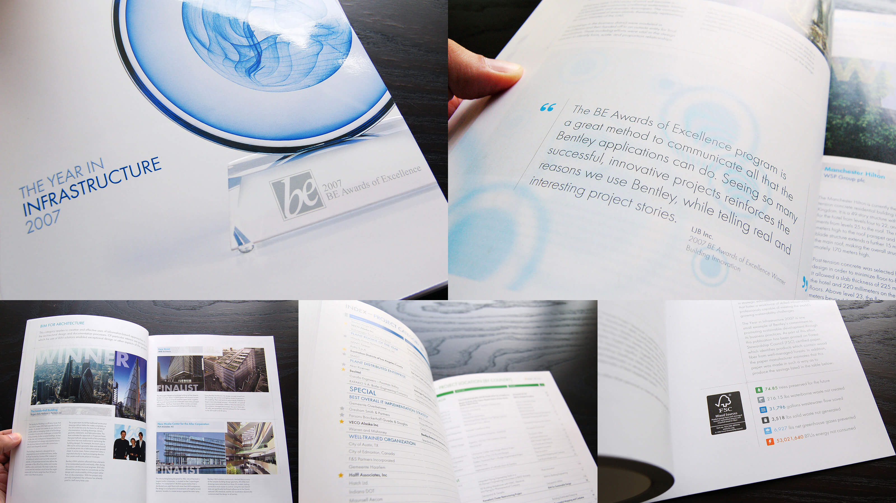
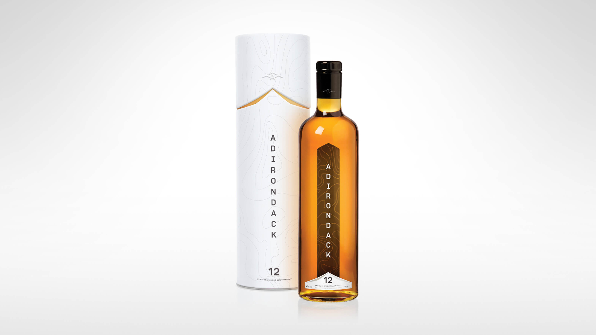
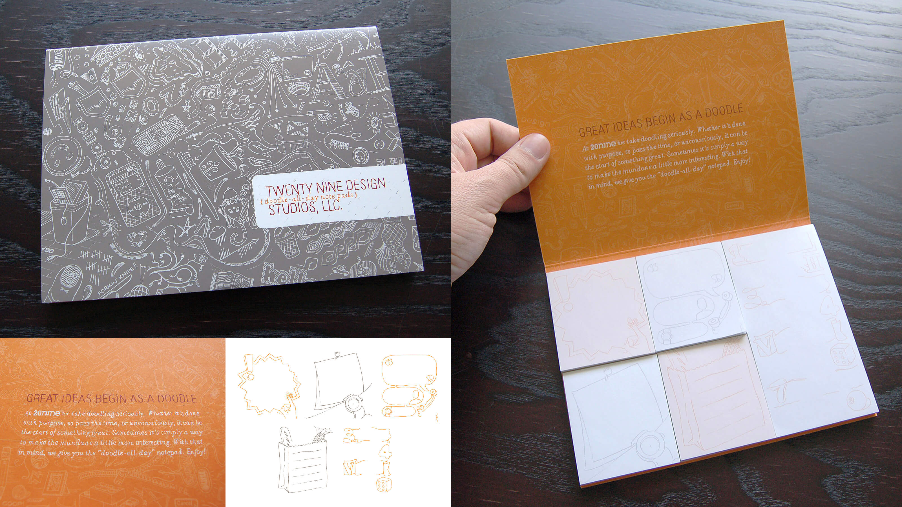
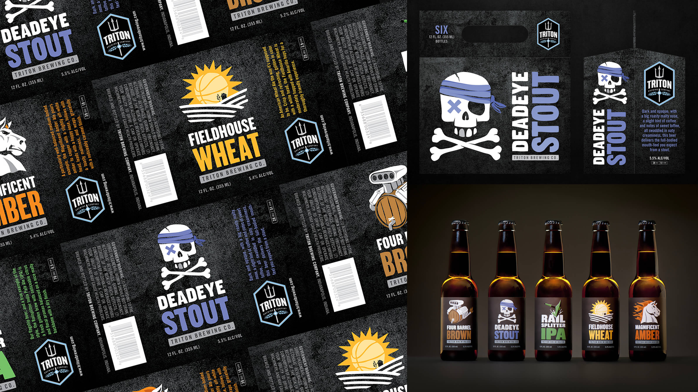
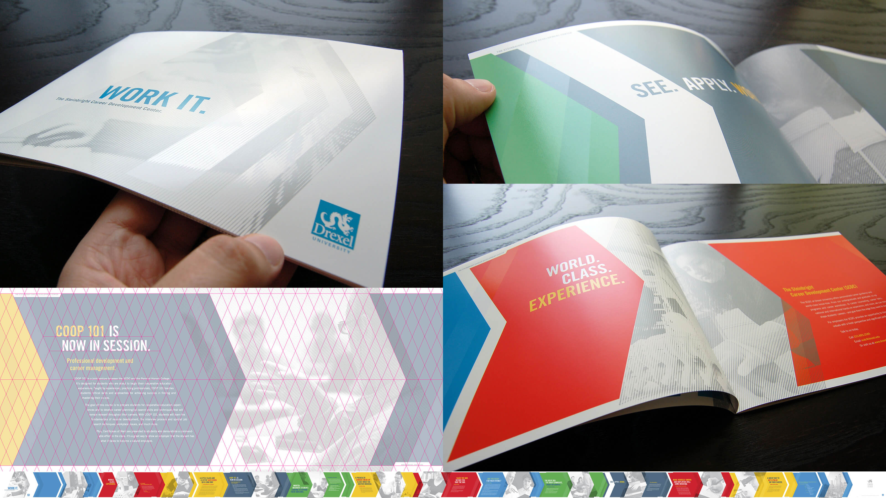
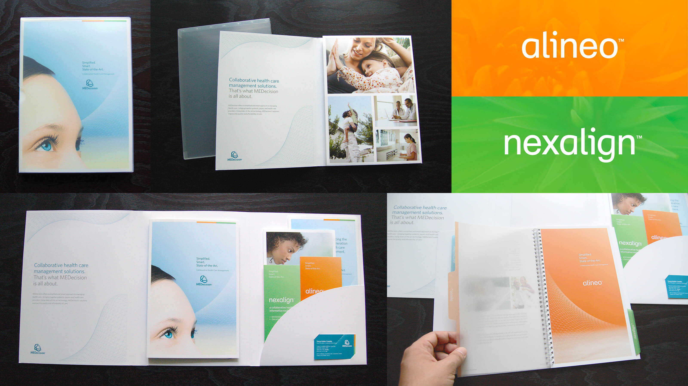
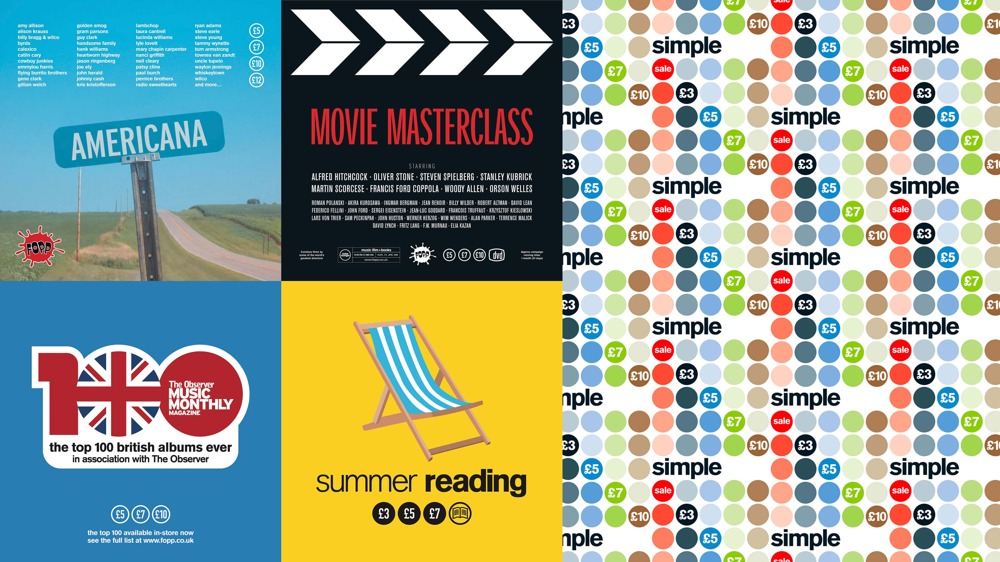
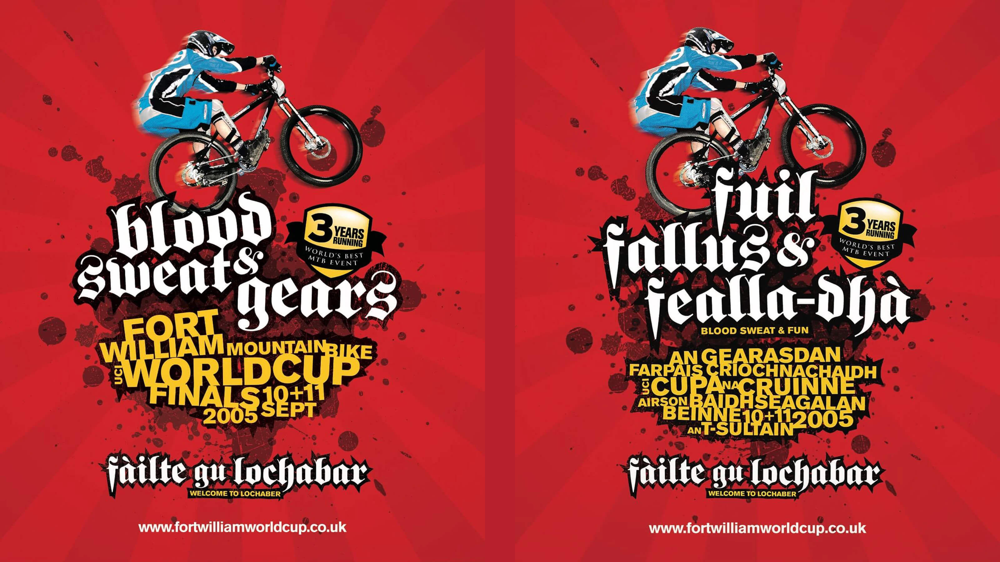

Various Clients
Design for print, packaging, and environment
Before moving into product UX/UI design systems, I spent many years as a multi-disciplinary designer working for various design agencies. Here are a few examples of work I created for print, packaging, and environment.
Bentley Systems Awards of Excellence yearbook
200-page yearbook for the Bentley Systems BE Awards of Excellence, highlighting excellence in various fields of engineering by users of their software and services. The front cover features embossing and UV varnish on the award graphic and typography.
Produced at 20nine Design Studios.

Adirondack Distillery single malt whisky packaging
Speculative brand concept and packaging design for a fictional single malt whisky (spelled with no ‘e’, Scotch-style) and distillery based in upstate New York.
The bottle is tall and slim with broad shoulders, with the distillery name printed directly on the bottle in white UV ink, encapsulated by the rear label with contour graphic to add depth and perspective. The angles of the labels and outer sleeve cap are reminiscent of the mountains surrounding the distillery. All facets of the packaging honor the geography of the area it comes from while still presenting a simple, sophisticated image popular with younger consumers.
Produced at 20nine Design Studios.

20nine Design Studios ‘Doodle-All-Day’ promotional notepad
Promotional piece highlighting the power of doodling as a basis for creativity. The “Doodle-All-Day” notepad was designed to encourage clients to develop more creative communication, and features five individual pad designs: reminder pad; telephone message pad; numbered list pad; shopping list pad; appointment pad. Each pad design was intentionally left incomplete, inviting the ‘doodler’ to trace over the existing designs and add their own embellishments.
The main cover graphic features doodles from all 20nine employees. A large tabloid sheet and pencil were placed in the studio, and all staff encouraged to do some doodling whenever they passed, until the sheet was completely full. The doodles are like a snapshot reflecting the multi-cultural makeup of the staff at that moment in time.
Produced at 20nine Design Studios.

Triton Brewing Company beer identities, labels, and packaging
Logo, beer identities, labels, and packaging for a craft microbrewery in Indianapolis, IN. The identities contained references to famous Indiana cultural icons: Deadeye Stout after “Deadeye Dick”, the 1982 novel written by Kurt Vonnegut; Magnificent Amber after “The Magnificent Ambersons”, the 1918 novel written by Booth Tarkington; Fieldhouse Wheat afterHinkle Fieldhouse at Butler University, home of the Butler Bulldogs; Four Barrel Brown, a joint reference to the Indianapolis Motor Speedway and Studebaker; Railsplitter IPA as Abraham Lincoln worked as a fence rail splitter in his early adulthood in Southern Indiana.
These identities were adapted to beer bottle labels, 6- and 24-pack packaging, tap room pouring handles, and more.
Produced at KA+A (now Studio Science).

Drexel University SCDC capabilities brochure
28-page brochure for the Steinbright Career Development Center at Drexel University. CMYK plus metallic silver, strikethrough matte varnish, and gloss aqueous detailing.
The brochure is laid out using a bespoke 0.5” diamond grid, and features a continuous arrow motif throughout that alludes to educational and career progression and development.
Produced at 20nine Design Studios.

MEDecision marketing collateral pack
Promotional collateral pack for a healthcare management software company, highlighting their core business and software offerings. The pack includes an outer frosted plastic sleeve, with a gatefold inner folder and pocket containing promotional materials. The spiral-bound brochure is held in place in the center of the folder with laser-cut flaps, and features heavyweight vellum tab inserts for easy navigation.
Produced at 20nine Design Studios.

FOPP Record in-store campaign identities
Various in-store campaign identities for Fopp Records, a chain of music, film, and book stores across the UK. Each campaign comprised of promotional in-store and fly posters, billboards, and in-store decorations such as wallpapers and hanging signage.
Produced at Hillside Agency.

UCI Mountain Bike World Cup Fort William stage identity
Graphic produced to promote one of the UK stages of the UCI Mountain Bike World Cup near Fort William in the Scottish Highlands. The graphic was adapted for use across posters, billboards, event space signage, and promotional swag. All materials were designed in English and Scots Gaelic.
Produced at Hillside Agency.
